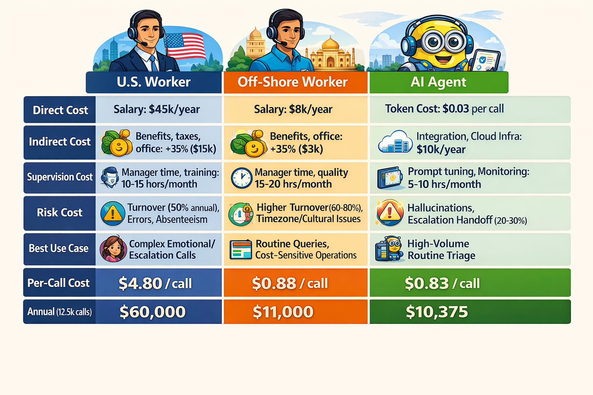
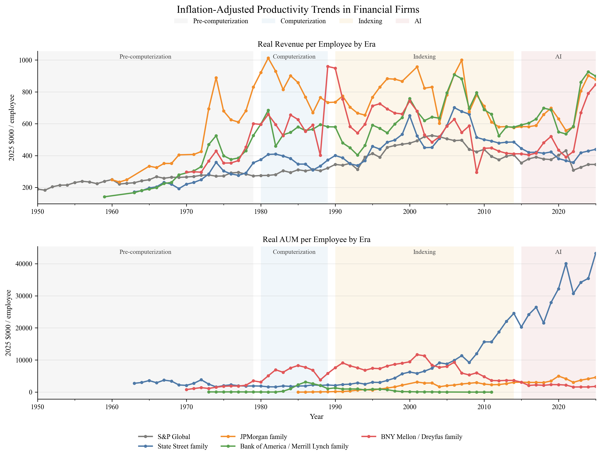
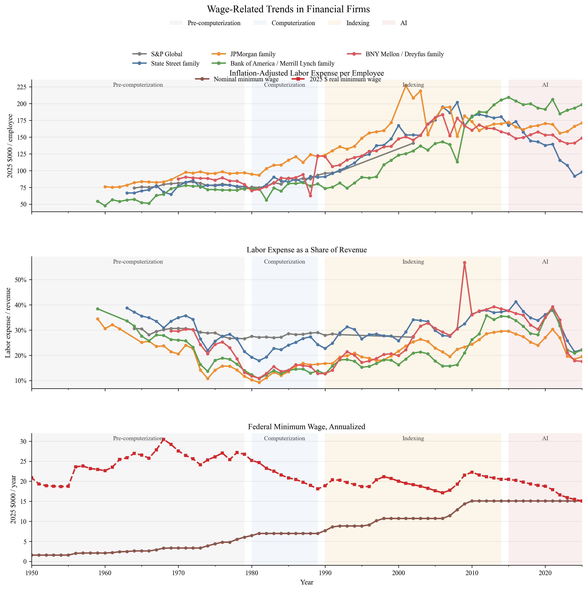
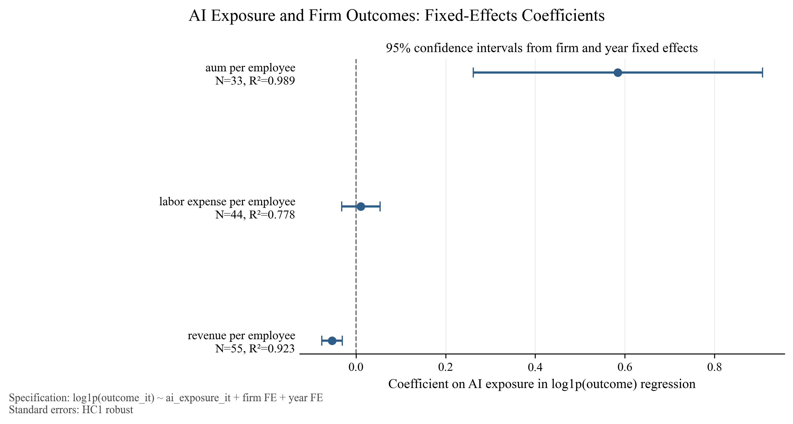
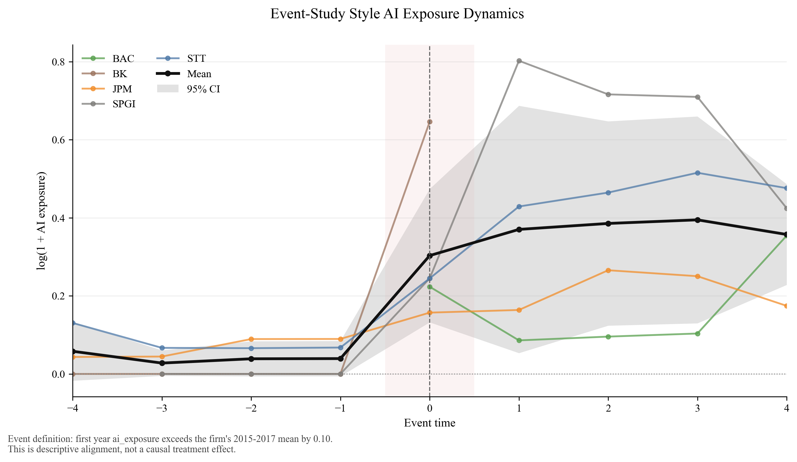

From Clerks to Agentic-AI:
How will Technology Change Labor Market in Finance?
Abstract
Artificial intelligence is beginning to reshape financial markets in the same way that computers and electronic systems reshaped them in earlier decades. This paper studies a focused version of that broader shift: the rise of AI trading agents and their effect on market participants, market structure, and labor demand inside finance. The central claim is not that AI will eliminate finance, but that it will reorganize who can do high-quality research, monitoring, execution, and risk management. We use the historical computer revolution in the 1980s and 1990s as a benchmark, then compare it with the current AI wave. The expected outcome is a more polarized industry: large institutions preserve structural advantages, small teams become more capable, and middle-layer roles face the greatest pressure.
1 The Question
The rapid diffusion of agentic AI has created a new question for finance: whether the technology will primarily substitute for labor, augment existing workers, or reorganize the allocation of tasks inside firms. The issue matters especially in financial services because the industry combines standardized workflows, information processing, client-facing service, and judgment-intensive decision-making within the same organizational structure. As a result, AI is likely to affect tasks unevenly. Some activities may become cheaper and faster, while others may remain bottlenecked by supervision, trust, interpretation, and responsibility. The central question is therefore not simply whether AI reduces headcount, but which parts of the firm adjust first and what that implies for productivity, scale, and labor demand.
This paper approaches that question with a finance-specific empirical design that combines historical comparison, firm-level operating outcomes, and a simple measure of AI exposure drawn from corporate disclosures. Rather than treating AI as a purely speculative future shock, the paper studies how its diffusion already appears in the language firms use and whether that diffusion aligns with changes in revenue intensity, scale, and labor cost per worker. The goal is not to claim definitive causality at this stage, but to build a transparent framework for asking how AI reshapes the organization of work inside finance.
2 Historical Parallel: The Computer Revolution
The natural benchmark for the AI wave is the earlier computer revolution. In the 1980s and 1990s, personal computers, spreadsheets, Bloomberg terminals, Reuters systems, and electronic trading infrastructure transformed the way financial firms processed information and managed risk. Those technologies did not eliminate finance. They changed who could operate effectively, how quickly information traveled through the system, and which firms could scale their edge.
That historical comparison matters because finance has already lived through one major technology shock. The earlier wave increased speed, improved information processing, expanded the use of derivatives, and widened the advantage of institutions that could afford hardware, data, and systems integration. Manual workflows such as paper tickets, phone-based execution, and fragmented recordkeeping gradually gave way to system-driven trading and more interconnected market structure. The current AI wave appears to be pushing on similar margins, but through cognition and workflow automation rather than through computation alone.
The next figure translates that historical comparison into a task-level cost question. It shifts the discussion from old technology infrastructure to the practical choice between human labor, off-shore labor, and AI agents. The point is not that AI is always cheaper, but that the relevant unit of analysis is the full workflow cost, including supervision, risk, and integration.

3 Baseline Evidence from the Earlier Productivity Shift
The earlier simple_analysis provides the descriptive bridge from the computer era to the current AI period. That work compares firm-group productivity across four broad eras: pre-computerization, computerization, indexing, and AI. The regression evidence shows that both revenue_per_employee and aum_per_employee are substantially higher in later eras than in the pre-computerization benchmark, even after controlling for firm-group fixed effects. In the revenue specification, the era coefficients rise from 1.4070 in the computerization period to 2.0543 in the indexing period and 2.3688 in the AI period. In the AUM specification, the coefficients rise from 1.3638 to 2.4197 and then 3.3944.
These magnitudes are not causal estimates, but they show that the financial panel is already moving in the same broad direction as the later SEC-based analysis. They also suggest that long-run productivity growth in finance did not arrive all at once. It accumulated through waves of technological and organizational change.

The real-era figure reinforces the same point after deflating the productivity ratios. The rise remains visible in real terms, so the pattern is not just an artifact of nominal growth. It is the cleanest descriptive bridge from the historical panel to the filing-based AI analysis.

The wage-trend figure adds the labor-market dimension. Labor costs also evolve over time, and wage growth is not identical across firm families. That matters because the central question is not only whether output per worker rises, but whether finance changes through labor displacement, labor augmentation, or internal task reallocation.
4 AI Competition: From Exposure to Reorganization
To examine the current AI wave more directly, the paper builds a firm-level AI exposure measure from official SEC 10-K filings for five large financial firms: Bank of America, BNY Mellon, JPMorgan Chase, S&P Global, and State Street. The corpus covers 2015 through 2025 and is fetched directly from SEC-hosted endpoints using a valid User-Agent header. The exposure measure counts direct AI language such as “artificial intelligence,” “machine learning,” “generative AI,” and “autonomous agent,” together with adjacent automation language such as “automation,” “robotic process automation,” and “workflow automation.” Direct AI terms receive higher weight, and the weighted count is normalized by total filing words to form the final ai_exposure variable.
The panel outcomes are revenue_per_employee, aum_per_employee, and labor_expense_per_employee. These variables are useful because they separate different channels through which AI may matter. Revenue per employee captures broad operating productivity. AUM per employee captures scale in asset-management and custody-type activity. Labor expense per employee provides a direct though incomplete proxy for labor cost pressure. The baseline specification is
| (1) |
This is a panel correlation design rather than a causal design. It estimates within-firm variation over time while absorbing common macro shocks. Its role is to test whether firms with rising AI disclosure intensity also display systematic changes in operating outcomes.
5 Democratization of Financial Capability
One implication of agentic AI is that some capabilities once reserved for large institutions are becoming cheaper and more modular. In earlier decades, access to premium terminals, specialized analysts, and bespoke internal systems created a substantial barrier between large firms and everyone else. Today, AI tools increasingly compress the cost of research assistance, market monitoring, documentation, and routine analytical tasks.
This does not mean the institutional advantage disappears. It means the composition of the advantage changes. Large firms still dominate in infrastructure, proprietary data, compliance depth, and execution quality. But AI lowers the cost of assembling a competent research and operations stack, which makes small teams more viable than they were under the older technology regime. In labor-market terms, that raises pressure on middle-layer functions whose edge depended on coordinating information flows that AI can now help standardize.
6 The Rise of Mini Hedge Funds
This logic points to a possible new firm form: very small teams operating with hedge-fund-like capability. A one- to three-person team equipped with AI can plausibly perform research triage, monitor multiple markets, summarize disclosures, draft memos, compare scenarios, and maintain higher operational coverage than a similarly sized team could in the past. The technology therefore does not only affect incumbent banks and asset managers. It also changes the minimum efficient scale for certain types of financial analysis and portfolio support.
The filing evidence is consistent with that broader interpretation. If AI exposure is associated with higher AUM per employee but not with immediate reductions in labor expense per employee, the more plausible story is not simply “firms fire people.” It is that AI allows more scale and workflow consolidation per worker, especially in businesses where monitoring and information processing matter.
7 Impact on Institutions
The fixed-effects results summarize that pattern clearly. The estimated coefficient on AI exposure is negative for revenue_per_employee, with a point estimate of -0.0535 and a robust standard error of 0.0117. The coefficient on aum_per_employee is positive, with a point estimate of 0.5843 and a robust standard error of 0.1646. The coefficient on labor_expense_per_employee is small and statistically insignificant, at 0.0107 with a robust standard error of 0.0219.

These estimates should not be read as causal proof. But they are informative because they separate different margins of adjustment. Greater AI disclosure intensity is associated with lower revenue intensity per worker, higher AUM per worker, and no clear immediate compression in labor expense per worker. In a finance setting, that combination is more consistent with reorganization, reinvestment, and output-mix change than with a clean headcount-reduction story.
This pattern also helps explain why middle-tier firms may face the most pressure. Large institutions retain advantages in infrastructure, execution, and proprietary data. Small teams gain capability through AI. The firms most exposed are those whose historical edge depended on labor-heavy coordination without the scale benefits of the largest incumbents.
8 Workforce Transformation
AGI labor impacts are hard to model directly, so the most practical starting point is bottom-line thinking. The relevant comparison is not whether AI is “cheap” in the abstract, but whether the fully loaded cost of a human’s output exceeds the all-in cost of AI tokens, infrastructure, and oversight. This framing also fits Kulveit’s discussion of post-AGI economics, which warns against importing human-economy assumptions too directly into an AI-dominated setting [24].
The table below makes that comparison concrete. AI is not costless, but its cost structure is different: more variable on usage, less tied to headcount, and often easier to scale across repetitive work. The key question is whether a task is dominated by judgment and exception handling, or by volume, standardization, and throughput.
| Cost component | U.S. Worker | Off-Shore Worker | AI Agent |
|---|---|---|---|
| Direct | Salary: $45k/year | Salary: $8k/year | Token: $0.03 per call |
| Indirect | Benefits, Admin: +35% ($15k) | Benefits, Admin: +35% ($3k) | Integration, infra: $10k/year |
| Supervision | Manager: 10–15 hours monthly | Manager: 15–20 hours monthly | Prompt, monitoring: 5–10 hours/month |
| Risk | Turnover (50% annual), errors, absenteeism | Turnover (60–80%), timezone issues | Hallucinations, escalation handoff (20–30%) |
| Per-call cost | $4.80/call | $0.88/call | $0.83/call |
| Annual (12.5k calls) | $60,000 | $11,000 | $10,375 |
The labor-market implication is that AI will likely reshape finance through tasks before it reshapes it through job titles. Functions that are highly codifiable, such as data processing, routine reporting, standardized review, first-pass compliance checks, and internal documentation, are the most likely to face cost compression. By contrast, judgment-heavy work, client trust, negotiation, model oversight, and regime interpretation are more likely to be augmented than replaced.
The event-study style figure supports this incremental view of diffusion. It aligns firms around the first year in which exposure rises above the early baseline by a fixed margin. Bank of America appears earlier, S&P Global accelerates later, JPMorgan and State Street move more gradually, and BNY Mellon crosses the threshold very late in the sample. That timing pattern suggests staggered organizational adoption rather than a single sector-wide break.

The broader implication is that AI in finance should not be treated as a binary adoption event. It behaves more like rising organizational intensity. Firms disclose it differently, adopt it at different speeds, and likely apply it to different task bundles. That is exactly why future work should focus on timing, heterogeneity by business line, and task-specific exposure rather than on a single headline measure of automation.
9 Who Will Not Be Replaced?
The evidence here is consistent with the task-based literature on technology and labor. Autor’s framework emphasizes that technology substitutes for routine tasks while complementing abstract and interpersonal ones [16, 21]. Acemoglu and Restrepo show that automation, augmentation, capital deepening, and task creation are distinct channels [13, 11]. Brynjolfsson and McAfee stress that organizational redesign matters as much as the technology itself [8, 5]. The present results fit that logic. AI exposure appears to align with changes in scale and workflow, but not with a simple, immediate reduction in labor expense per employee.
That suggests the workers least likely to be displaced are not simply the most senior by title, but the ones who contribute judgment under uncertainty, build frameworks, supervise models, interpret structural breaks, and integrate information across domains. Finance has many routine components, but it also has many situations in which codified prediction is not enough. Black swan events, regime shifts, political shocks, and strategic interaction still require human oversight. AI can improve throughput and pattern recognition, but it does not eliminate the need for decision rights.
10 A Bifurcated Future
Taken together, the evidence points toward a more polarized financial industry. Large institutions retain structural advantages. Very small teams become more capable because AI compresses the cost of coordination and analysis. The middle layer faces the greatest pressure because its historical role was often to intermediate between raw information and structured workflow. As AI becomes better at that layer of work, the competitive map shifts.
This is why the paper frames AI less as a story of total replacement and more as a story of redistribution of capability. The central adjustment margin may be organizational redesign rather than immediate labor shedding. Firms may first change the scale of work per employee, the mix of tasks, and the internal allocation of responsibility. Only later, if at all, do those changes show up clearly in headcount or compensation ratios.
11 Final Perspective: Efficiency, Risk, and Limits
The present analysis remains exploratory and has clear limitations. The sample includes only five firms. The exposure measure is based on filing language, which captures disclosure intensity as well as underlying operational adoption. The fixed-effects design cannot separate causality from reverse causality or omitted organizational change. For those reasons, the results should be interpreted as descriptive evidence rather than definitive estimates of the labor-market effect of AI in finance.
Still, the findings are useful because they sharpen the question. They suggest that the first-order effect of AI in finance may be reorganization of tasks, scaling of monitoring capacity, and uneven diffusion across firms, rather than an immediate collapse in labor costs. The next step is to expand the sample, strengthen the event-study design, and introduce heterogeneity by function, job type, and business line.
12 Conclusion
This paper provides an initial working framework for studying how agentic AI changes the labor market in finance using official SEC filing data. The main contribution is a transparent AI exposure proxy built from 10-K text and a simple panel analysis that relates the proxy to firm-level outcomes. The empirical evidence suggests that higher AI exposure is associated with lower revenue per employee, higher AUM per employee, and no clear immediate change in labor expense per employee. The event-study style evidence further suggests that AI diffusion is staggered and organizationally mediated. The broader implication is that finance is unlikely to be “eliminated” by AI, but it is likely to be reorganized around new combinations of scale, supervision, and judgment.
References
- [1] Brynjolfsson, E., A. McAfee, and M. Spence. 2014. “New World Order: Labor, Capital, and Ideas in the Power Law Economy.” Foreign Affairs, July/August 2014.
- [2] Brynjolfsson, E., and A. McAfee. 2015. “Will Humans Go the Way of Horses? Labor in the Second Machine Age.” Foreign Affairs, July/August 2015.
- [3] Aghion, P., U. Akcigit, A. Bergeaud, R. Blundell, and D. Hémous. 2016. “Innovation and Top Income Inequality.” Journal of Political Economy 124(5): 1473–1504.
- [4] McAfee, A., and E. Brynjolfsson. 2016. “Human Work in the Robotic Future: Policy for the Age of Automation.” Foreign Affairs, July/August 2016.
- [5] Brynjolfsson, E., and A. McAfee. 2017. “The Business of Artificial Intelligence: What it Can and Cannot Do for Your Organization.” Harvard Business Review.
- [6] Brynjolfsson, E. 2022. “The Turing Trap: The Promise & Peril of Human-Like Artificial Intelligence.” D&ae;dalus.
- [7] Brynjolfsson, E., and G. Unger. 2023. “The Macroeconomics of Artificial Intelligence.” IMF.
- [8] Brynjolfsson, E., D. Li, and L. Raymond. 2023. “Generative AI at Work.” The Quarterly Journal of Economics.
- [9] Brynjolfsson, E., K. McElheran, J. F. Li, Z. Kroff, E. Dinlersoz, L. Foster, and N. Zolas. 2024. “AI adoption in America: Who, what, and where.” Journal of Economics & Management Strategy.
- [10] Autor, D. 2024. “Does automation replace experts or augment expertise? The answer is yes.” 2024 Schumpeter Lecture, European Economic Association.
- [11] Acemoglu, D., and P. Restrepo. 2022. “Tasks, Automation, and the Rise in U.S. Wage Inequality.”
- [12] Aghion, P., A. Bergeaud, T. Boppart, and J.-F. Brouillette. 2025. Resetting the Innovation Clock: Endogenous Growth through Technological Turnover.
- [13] Acemoglu, D., F. Kong, and P. Restrepo. 2025. “Tasks at Work: Comparative Advantage, Technology and Labor Demand.” Handbook of Labor Economics 6: 1–114.
- [14] Agrawal, A. K., E. Brynjolfsson, and A. Korinek. 2025. The Economics of Transformative AI. University of Chicago Press.
- [15] Agrawal, A. K., E. Brynjolfsson, and A. Korinek. 2025. “A Research Agenda for the Economics of Transformative AI.” NBER Working Paper.
- [16] Autor, D., and N. Thompson. 2025. “Expertise.” Journal of the European Economic Association 23(4): 1203–1271.
- [17] Acemoglu, D., and J. Loebbing. 2026. “Automation and Polarization.” Journal of Political Economy 134(3): 1017–1072.
- [18] Acemoglu, D., T. Lin, A. Ozdaglar, and J. Siderius. 2026. “How AI Aggregation Affects Knowledge.”
- [19] Acemoglu, D., D. Kong, and A. Ozdaglar. 2026. “AI, Human Cognition and Knowledge Collapse.”
- [20] Acemoglu, D., D. Autor, and S. Johnson. 2026. “Building Pro-Worker Artificial Intelligence.” Brookings Institution.
- [21] Autor, D., C. Chin, A. Salomons, and B. Seegmiller. 2026. “What Makes New Work Different from More Work?” Forthcoming in Annual Review of Economics.
- [22] Autor, D., and B. Kausik. 2026. “Resolving the Automation Paradox: Falling Labor Share, Rising Wages.”
- [23] Brynjolfsson, E., J. F. Li, J. Miranda, R. Seamans, and A. J. Wang. 2026. “Minimum Wages and Rise of the Robots.” NBER Working Paper 34895.
- [24] Kulveit, J. 2026. “Post-AGI Economics As If Nothing Ever Happens.” LessWrong, February 4, 2026. https://www.lesswrong.com/posts/fL7g3fuMQLssbHd6Y/post-agi-economics-as-if-nothing-ever-happens#